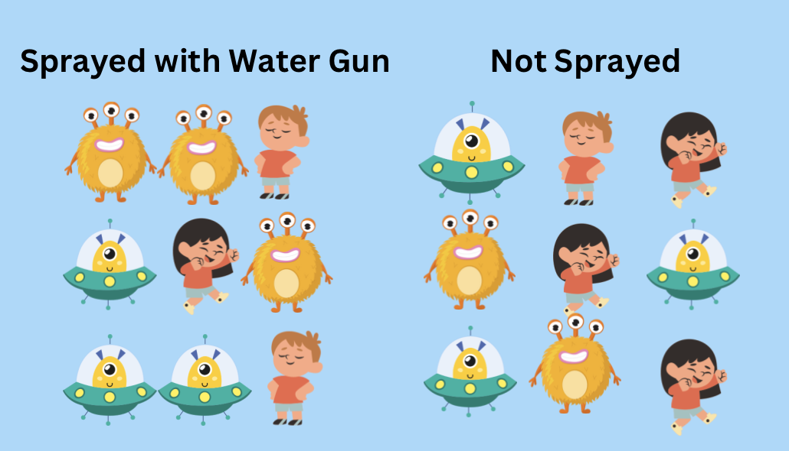

A key part of any research question is to figure out who our target population is. These are the people we want to study. For example, is it 85 year olds who play american football? Is it children between 5-11 years of age using the swings at the park? Determining this allows us to figure out who to sample but also who our results will be applicable to. The best way show this is through an example, so without further ado let’s get started!
Magical Water Gun for Height?
Imagine that monsters came out of your closet, Monsters Inc. style, and claimed that they have a magical water gun that makes you grow taller. We want to know if they are telling the truth or if they are fibbing, but first we need to figure out who exactly they are claiming this will work on.
In clinical epidemiology, we determine this by following the PICO acronym: Population, Intervention, Comparator and Outcome(s). For this situation, our research question would look something like this: “Does being sprayed with a water gun increased your height, compared to not being sprayed?”.
Now this is a good start but who exactly are we referring too? Who do we want to know if it works for? Everyone in the world? Just children? Short adults? The causal estimand helps us with this part.

Figure 1: Monsters
These monsters that have shown up all of a sudden say they’ve sprayed some of themselves with the water gun and it’s worked! Some kids who want to grow have eagerly signed up and been sprayed as well. The effect has varied individual by individual so we need to know: who’s this actually working for, if at all? Why? Well both monsters and kids are pretty short, their friends want to know if it will work on them! (cue the monstars from Space Jam). Figure 1 shows what our sample looks like. As you can see, there’s a mixture of monsters and kids in each group which will make it harder to determine if the magical water gun is actually working, or if monsters just grow taller than kids.
The figure is just illustrative. Let’s look at the actual characteristics from the individuals we will be studying outlined in Table 1.
Table 1: Characteristics
Sprayed by Water Gun
(n = 458)
Not Sprayed
(n = 129)
Number of eyes, mean (SD)
2.59 (1.31)
2.38 (1.29)
Age, mean (SD)
27.75 (40.4)
23.27 (37.83)
Monsters, n (%)
110 (24.0%)
25 (19.4%)
Height (in feet), mean (SD)
1.71 (0.65)
1.60 (0.66)
There were 458 individuals sprayed by the water gun, while 129 were not sprayed. There’s differences in age and percentage of monsters. Looking at just height, you could think that this magical water gun works! However….and a big however…does it? Or is it just that it works better on monsters? Or that monsters are taller?
Now, confounding aside, what do we want to know? Who to spray with this gun! It’s not quite as simple and straightforward as that. Let’s briefly go over the four estimands we’ll be talking about in this case.
Types of Estimands
We’ll focus on four causal estimands, in no particular order:
Average treatment effect in the population (ATE)
Average treatment effect in the treated (ATT)
Average treatment effect in the untreated (ATU)
Average treatment effect in the overlap (ATO)
One important thing to note here is that all of these estimands would be the same in a randomized trial because the characteristics will be the same (at least in theory). Therefore, the ATT, ATU, ATE and ATO will be the same. However, not so in observational data.
Like many, almost all, areas of science, there are several assumptions that must be met. For causal inference, these assumptions are exchangeability, positivity, consistency, no versions of treatment and no interference. I suggest checking out the appendix in Greifer and Stuart (2021) since these can vary by the estimand selected.
Potential Outcomes
An important component here is the concept of potential outcomes. These can be written as \(Y_0\) and \(Y_i\)(Greifer and Stuart 2021). For a binary treatment, like in our case, we can think of it as each person has two potential outcomes prior to them getting the treatment or not. After they receive the treatment, only one of them is revealed (Greifer and Stuart 2021).
Now, the individual causal effect is \(Y_1\) - \(Y_0\) for each person. In a perfect world, we’d know this however the world isn’t perfect. Instead, we take an average (if we assume certain things, described in Greifer and Stuart (2021) ). In math terms, we show this as \(E[Y_{1} - Y_{0}]\).
Propensity Score
We will be using propensity scores to estimate each of these estimands. A brief overview of the propensity score is that it’s the conditional probability of treatment. More simply put, it’s the probability of being sprayed by the water gun based on your number of eyes and if you’re a monster or not.
ATE
Ask yourself: would it be feasible to spray all eligible people in this study with the magical water gun? If we assume yes, then we could look at the ATE (Desai and Franklin 2019).
The ATE is the effect of the treatment for the entire study population (Greifer and Stuart 2021). Another way of thinking of this is to ask how would height change if everyone was sprayed with the water gun versus if no one was sprayed with the water gun. If we write it in math terms, it’s:
\[E[Y_{1}-Y_{0}]\]
Now, how do we estimate this? One way is to use inverse probability weights. To calculate these, we need the propensity score (PS). Once we know the PS, we can calculate these weights as \(1/{PS}\) for the treated group and \(1/(1-{PS})\) for the control group. Then we can plug these weights into the outcome model and away we go!
Code
# First, fit a model for the treatment (in this case our water gun)ps.mod <-glm(sprayed ~ eyes + group, family =binomial(link ="logit"), data = df)# Use df.ps <- df %>% dplyr::mutate(ps =predict(ps.mod, type ="response"), weights_ate = dplyr::case_when(# Note: for simplicity using unstabilized weights sprayed ==1~1/ps, sprayed ==0~1/(1-ps) ) )outcome.mod <-glm(height ~as.character(sprayed),family =gaussian(link ="identity"),weights = weights_ate, data = df.ps)sandwich_se <-diag(sandwich::vcovHC(outcome.mod, type ="HC"))^0.5outcome <- broom::tidy(outcome.mod) |> dplyr::filter( term =="as.character(sprayed)1" ) |> dplyr::mutate(upper.ci = estimate +qnorm(0.975)*sandwich_se[2],lower.ci = estimate -qnorm(0.975)*sandwich_se[2], )paste0("Average Height Difference: ", round(outcome$estimate, 3), " 95% CI (", round(outcome$lower.ci,3), " to ", round(outcome$upper.ci, 3), ")")
[1] "Average Height Difference: 0.022 95% CI (-0.109 to 0.154)"
Ta da! Now we know that being sprayed with a water gun doesn’t affect the height in our ATE population. But what about if not everyone is eligible for the treatment?
ATT
Now we ask, would the treatment only be given to patients with certain characteristics? If yes, then the ATT might be of interest (Desai and Franklin 2019). This is also useful when considering the harmful effects of a treatment (Greifer and Stuart 2021). For our example, we want to know what the effects of the water gun are in those receiving it. If it doesn’t work in the people getting sprayed, then why are we spraying them? Would we be better off not soaking them? In mathematical notation:
\[E[Y_{1}-Y_{0}|T = 1]\]
In term of weights, all of the patients in the treated group get a value of \(1\) while those in the control get a value of \(PS / (1-PS)\). These are known as standardized mortality ratio weights.
Code
df.ps <- df %>% dplyr::mutate(ps =predict(ps.mod, type ="response"), weights_att = dplyr::case_when(# Note: for simplicity using unstabilized weights sprayed ==1~1, sprayed ==0~ ps/(1-ps) ) )outcome.mod <-glm(height ~as.character(sprayed),family =gaussian(link ="identity"),weights = weights_att, data = df.ps)sandwich_se <-diag(sandwich::vcovHC(outcome.mod, type ="HC"))^0.5outcome <- broom::tidy(outcome.mod) |> dplyr::filter( term =="as.character(sprayed)1" ) |> dplyr::mutate(upper.ci = estimate +qnorm(0.975)*sandwich_se[2],lower.ci = estimate -qnorm(0.975)*sandwich_se[2], )paste0("Average Height Difference: ", round(outcome$estimate, 3), " 95% CI (", round(outcome$lower.ci,3), " to ", round(outcome$upper.ci, 3), ")")
[1] "Average Height Difference: 0.022 95% CI (-0.11 to 0.154)"
Our results are similar but not the same as those for the ATE! In this case they are close but often that isn’t true.
ATU
The ATU is similar to the ATT except opposite (okay admittedly that sentence doesn’t make a lot of sense). The ATU is asking how would the height be different if the monsters and kids who didn’t get sprayed, got sprayed? In mathematical notation:
\[E[Y_{1}-Y_{0}|T = 0]\]
How do we calculate the ATU? You guessed it! The opposite of the ATT…well kind of. It’s \(1\) for those in the control group and \((1-PS)/PS\) for the treated group.
Code
df.ps <- df |> dplyr::mutate(ps =predict(ps.mod, type ="response"), weights_atu = dplyr::case_when(# Note: for simplicity using unstabilized weights sprayed ==1~ (1-ps)/ps, sprayed ==0~1 ) )outcome.mod <-glm(height ~as.character(sprayed),family =gaussian(link ="identity"),weights = weights_atu, data = df.ps)sandwich_se <-diag(sandwich::vcovHC(outcome.mod, type ="HC"))^0.5outcome <- broom::tidy(outcome.mod) |> dplyr::filter( term =="as.character(sprayed)1" ) |> dplyr::mutate(upper.ci = estimate +qnorm(0.975)*sandwich_se[2],lower.ci = estimate -qnorm(0.975)*sandwich_se[2], )paste0("Average Height Difference: ", round(outcome$estimate, 3), " 95% CI (", round(outcome$lower.ci,3), " to ", round(outcome$upper.ci, 3), ")")
[1] "Average Height Difference: 0.023 95% CI (-0.104 to 0.15)"
ATO
ATO is the average effect of the treatment in the overlap. Those patients who it’s unclear if the benefits would outweigh the costs (Greifer and Stuart 2021). These patients are very similar to each other but less similar for patients who the treatment decisions are more “clear cut” so to say (Greifer and Stuart 2021). In mathematical notation:
\[E[Y_{1}-Y_{0}]\]
Now something you might notice here is that the equation is the same as above for the ATE. Why is that? Well it’s because we are still reweighing both the treated and control groups but it’s a different target population. Instead of it being “everyone” like above, it’s the people who are in the uncertain group. We weigh them as \(PS\) for the sprayed group and \(1-PS\) for the not sprayed group.
Code
df.ps <- df |> dplyr::mutate(ps =predict(ps.mod, type ="response"), weights_ato = dplyr::case_when(# Note: for simplicity using unstabilized weights sprayed ==1~ (1-ps), sprayed ==0~ ps ) )outcome.mod <-glm(height ~as.character(sprayed),family =gaussian(link ="identity"),weights = weights_ato, data = df.ps)sandwich_se <-diag(sandwich::vcovHC(outcome.mod, type ="HC"))^0.5outcome <- broom::tidy(outcome.mod) |> dplyr::filter( term =="as.character(sprayed)1" ) |> dplyr::mutate(upper.ci = estimate +qnorm(0.975)*sandwich_se[2],lower.ci = estimate -qnorm(0.975)*sandwich_se[2], )paste0("Average Height Difference: ", round(outcome$estimate, 3), " 95% CI (", round(outcome$lower.ci,3), " to ", round(outcome$upper.ci, 3), ")")
[1] "Average Height Difference: 0.022 95% CI (-0.106 to 0.151)"
Choose Your Adjustment Technique Wisely!
Picking the estimand of interest isn’t just important for the target population but also for the adjustment technique selected. Certain adjustment techniques can only target certain estimands (Greifer and Stuart 2021). This becomes even more important when you are comparing methods.
For example, IPW and PSM do not target the same estimand (Greifer and Stuart 2021). There is a great flowchart for the steps involved by Desai and Franklin (2019) when trying to decide on the technique. Additionally, Greifer and Stuart (2021) have a good table for selecting the technique based on the causal estimand.
Next Steps
What’s next? Well know you can go out into the world and answer all your burning questions like “Does this magical water gun actually work?” and followup with “Who exactly does it work on?”
References
Desai, Rishi J, and Jessica M Franklin. 2019. “Alternative Approaches for Confounding Adjustment in Observational Studies Using Weighting Based on the Propensity Score: A Primer for Practitioners.”Bmj 367.
Greifer, Noah, and Elizabeth A Stuart. 2021. “Choosing the Estimand When Matching or Weighting in Observational Studies.”arXiv Preprint arXiv:2106.10577.